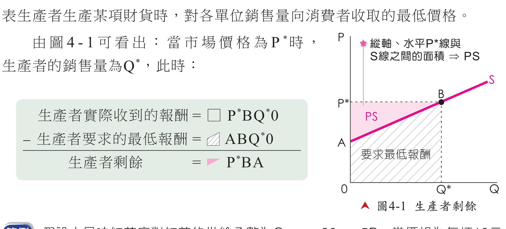
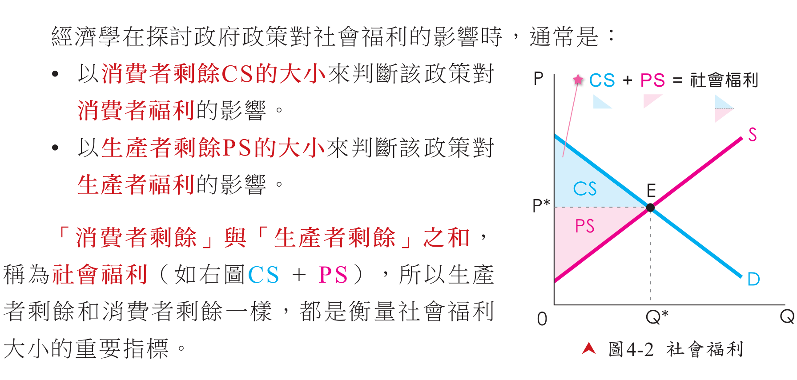
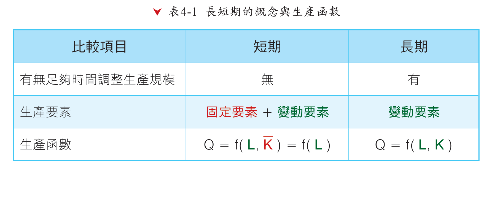
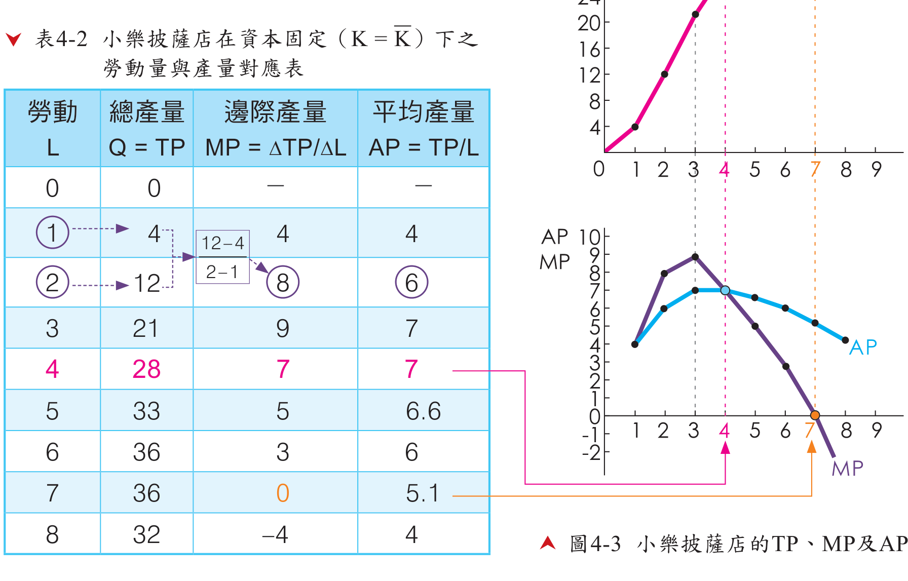
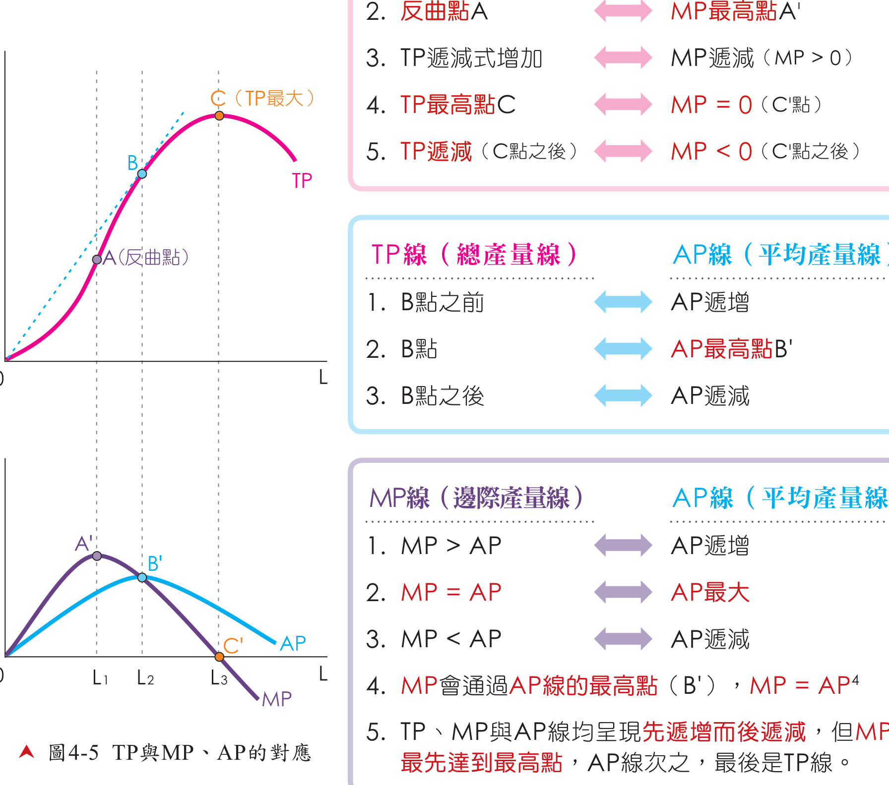
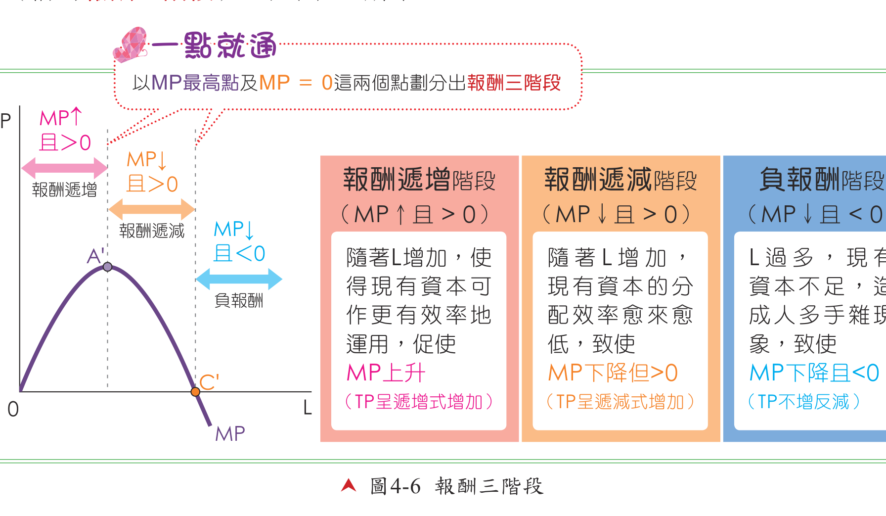
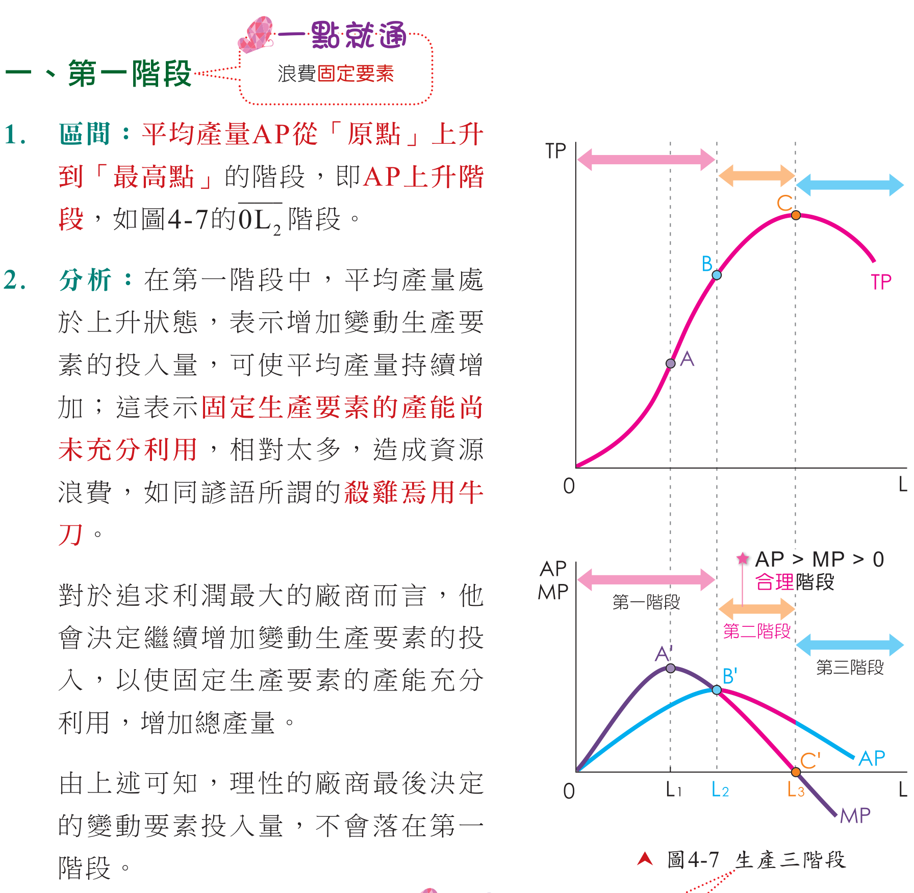

| 生產方式 | 定義與說明 | 優缺點與實例 |
|---|---|---|
| 直接生產 | 不使用生產工具，完全赤手空拳直接向大自然獲取財貨的生產方式。 | 效率極低。實例：原始人徒手摘野果、用雙手撈魚。 |
| 迂迴生產 （資本化生產） |
先製造機器設備等生產工具（資本財），再利用這些工具來生產消費財的生產方式。 | 現代工業生產的核心！初期費時耗資，但可大幅提高生產效率、降低長期平均成本。實例：先造漁網與漁船再出海捕魚；先造晶圓機具再生產晶片。 |
| 生產要素（Input） | 要素提供者 | 所獲取之經濟報酬 | 對應後續章節 |
|---|---|---|---|
| 勞動（Labor, L） | 勞工（人類心力與體力投入） | 工資（Wage, W） | CH11 工資理論 |
| 土地（Land, N） | 地主（大自然賦予之天然資源與地理位置） | 地租（Rent, R） | CH11 地租理論 |
| 資本（Capital, K） | 資本家（人造的人力資本、廠房機器設備） | 利息（Interest, i） | CH12 利息理論 |
| 企業家才能（Entrepreneurship, E） | 企業家（組織資源、承擔經營風險、技術創新） | 利潤（Profit, π） | CH12 利潤理論 |



| 期間類型 | 要素調整彈性 | 生產函數形態 |
|---|---|---|
| 短期（Short-Run） | 至少有一種要素固定不變（如廠房設備 K 固定），只能透過調整變動要素（如勞動 L）來增減產量。 | Q ＝ f (L, K̄) （K̄ 代表資本固定） |
| 長期（Long-Run） | 所有生產要素皆可隨意調整（無固定要素存在），廠商可自由擴建廠房、引進新機具或自由進退產業。 | Q ＝ f (L, K) （所有要素均為變動） |
| 指標名稱 | 英文縮寫 | 計算公式 | 經濟意義 |
|---|---|---|---|
| 總產量 | TP (Total Product) | TP ＝ AP × L ＝ ΣMP | 投入一定量的變動要素（勞動 L）所生產出來的全部產量。 |
| 平均產量 | AP (Average Product) | APL ＝ TP / L | 平均每單位勞動投入所貢獻的產量（TP 線上點與原點連線之射線斜率）。 |
| 邊際產量 | MP (Marginal Product) | MPL ＝ ΔTP / ΔL | 每增加 1 單位勞動投入，所引起總產量的增加量（TP 曲線的切線斜率）！ |


| 幾何關鍵位置 | 總產量（TP）狀態 | 邊際產量（MP）狀態 | 平均產量（AP）狀態 |
|---|---|---|---|
| ① 拐點（反曲點，A 點） | TP 由「凹向上（遞增）」轉為「凹向下（遞減）」 | MP 達到歷史最高點！（A' 點） | AP 仍在上升階段（MP ＞ AP） |
| ② AP 最高點（B 點） | 原點出發射線與 TP 線相切處 | MP ＝ AP（MP 由上方貫穿 AP 最高點！） | AP 達到最高點！（B' 點） |
| ③ TP 最高峰（C 點） | TP 達到歷史最大值！（切線水平，C 點） | MP ＝ 0（MP 剛好穿過橫軸！C' 點） | AP 處於下降階段 |
| ④ 過高峰之後 | TP 開始下滑（負報酬） | MP ＜ 0（負數，跌落橫軸下方） | AP 繼續下降但恆為正數 |


| 階段 | 範圍界定 | 產量特徵 | 廠商決策與評價 |
|---|---|---|---|
| 第 Ⅰ 階段 | 原點 0 ～ AP 最高點（0 ～ L2） | MP ＞ AP，AP 持續上升。 | 不合理階段！固定要素相對過多（設備閒置，俗稱「殺雞焉用牛刀」），多增聘勞工能使平均效率提升，理性廠商不會在此停產。 |
| 第 Ⅱ 階段 | AP 最高點 ～ MP ＝ 0（L2 ～ L3） | AP ＞ MP ＞ 0，AP 與 MP 皆遞減但均為正值。 | 🌟 唯一經濟合理生產階段！固定要素與變動要素配置最適當。廠商具體生產在哪一點，取決於要素價格與產品價格。 |
| 第 Ⅲ 階段 | MP ＝ 0 之後（L3 之後） | MP ＜ 0（負數），TP 隨勞工增加反而下降。 | 絕對不合理階段！變動要素相對過多（「人多手雜，愈幫愈忙」），增聘員工反而破壞產出，理性廠商絕不在此生產。 |
| 抑制方式 | 內涵與手段 | 實例 |
|---|---|---|
| 積極抑制 (Positive Checks) |
透過提高死亡率來縮減人口（非自願性）。 | 戰爭、瘟疫、飢荒、惡劣氣候天災。 |
| 預防抑制 (Preventive Checks) |
透過降低出生率來控制人口（人為理性預防）。 | 晚婚、不婚、道德自制。 |